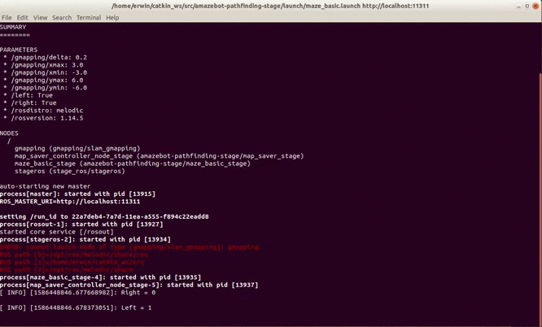
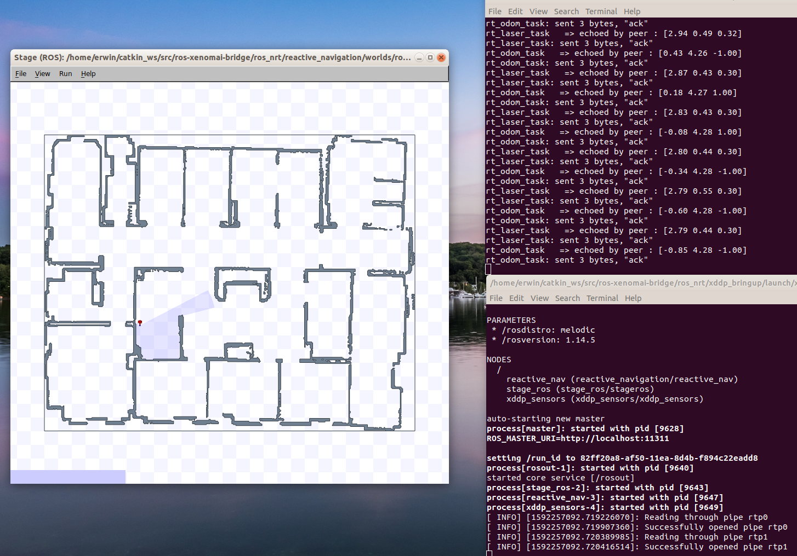
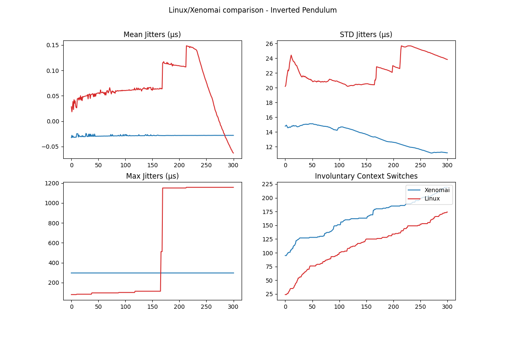
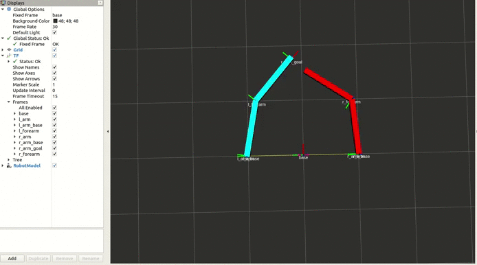
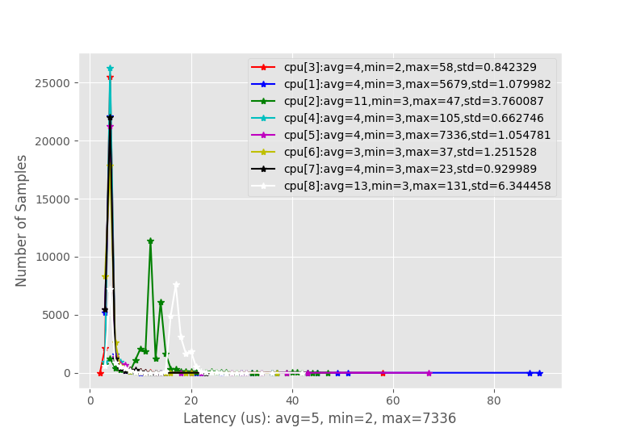
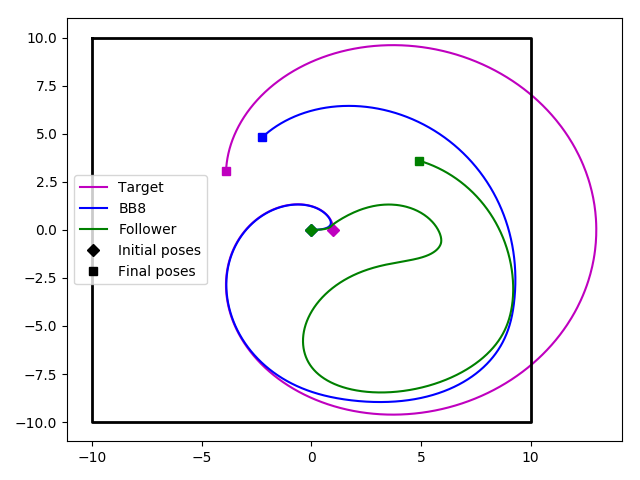
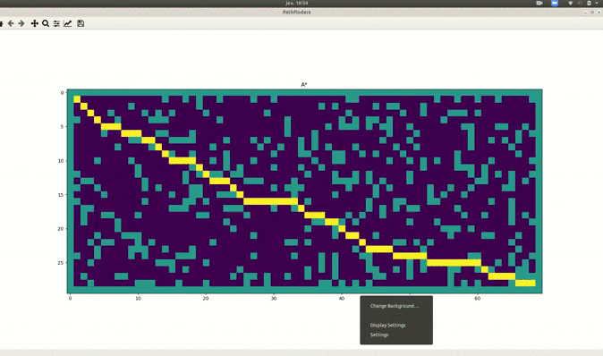
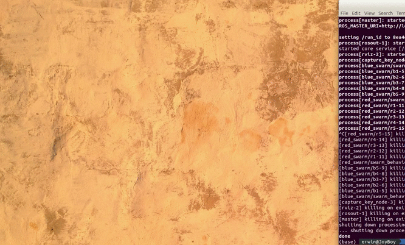

Amazebot  Repositories containing the arduino firmware, ros driver, ros pathfinding implementation of the Amazebot robot (differential robot). ROS C++ Python Robotics Arduino Pathfinding
Autonomous UAV Udacity Flying Cars Nanodegree repository : contains 2D/3D pathfinding solutions, a cascaded controller and an extended kalman filter. Python C++ Drone Robotics UAV Pathfinding Control Estimations
ROS/Xenomai XDDP Communication  A ROS Stack wrapping Xenomai's XDDP protocol function in Classes and demo packages such as an Echo application and a Navigation package. ROS Xenomai C++ Real-Time Robotics
ROS2 Realtime Statistics Toolbox  A ROS2 package allowing convertion from realtime statistics topics to json, and from json to plots. ROS2 Python Real-Time Inverted Pendulum Plot Data Analysis
Dual Planar Arm  A ROS Stack to control a planar arm with another planar arm's movements. (tf, services) ROS Python Dual Arms
Latencies Plotting Toolbox  A set of scripts to generate plots from Xenomai's latency test and Cyclictest. Python Xenomai Data Analysis Real-Time Statistics
Differential Robot Simulator  Wheeled robot simulator offering sensor bearing, robot following and obstacle avoidance. All plotted with matplotlib. C++ Motion Control Sensor Fusion Wheeled Robotics
Python Pathfinding Algorithms  Implementation of A*, DFS, Dijkstra, BFS, Bidirectional A* and Spanning Tree algorithms for Grids. Plotted with matplotlib and/or CLI. Pathfinding Python
Bird Swarm  ROS implemention of a bird swarm (scalable) a leader publishes its position and followers subscribe to it and follow (with a P controller). ROS C++ Swarms